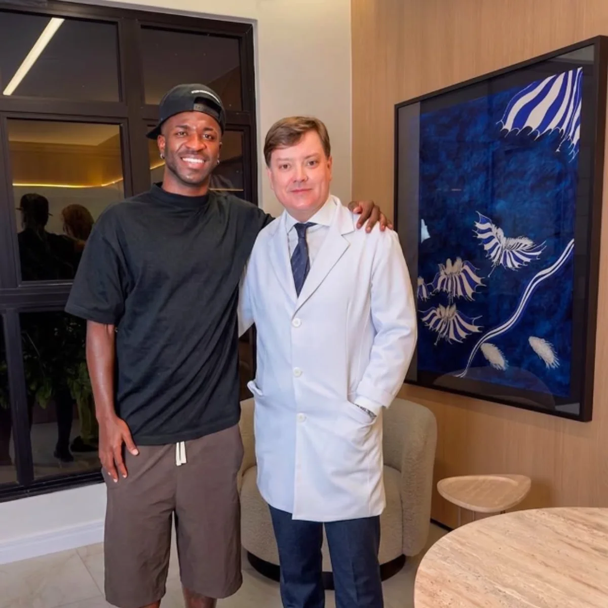

Inicio |
Teoría 1 |
Teoría 2 |
Teoría 3
TEORÍA 2: EL RETOQUE ESTÉTICO Y LA MANDÍBULA NUEVA

El cambio repentino en la cara
Al regresar del parón con Brasil, muchos aficionados se fijaron en que la mandíbula de Vini se veía bastante más marcada y cuadrada que antes. En los planos cortos del partido parecía otra persona.
Las tres posibilidades:
-
Aprovechó las vacaciones para hacerse un retoque estético o una marcación mandibular.
- El culpable del desperfecto:

- El clon vino con las facciones demasiado cuadradas de fábrica.
- Ahora juega mucho más serio para no forzar los puntos del retoque recién hecho.
Anterior: Teoría 1
Siguiente: Teoría 3